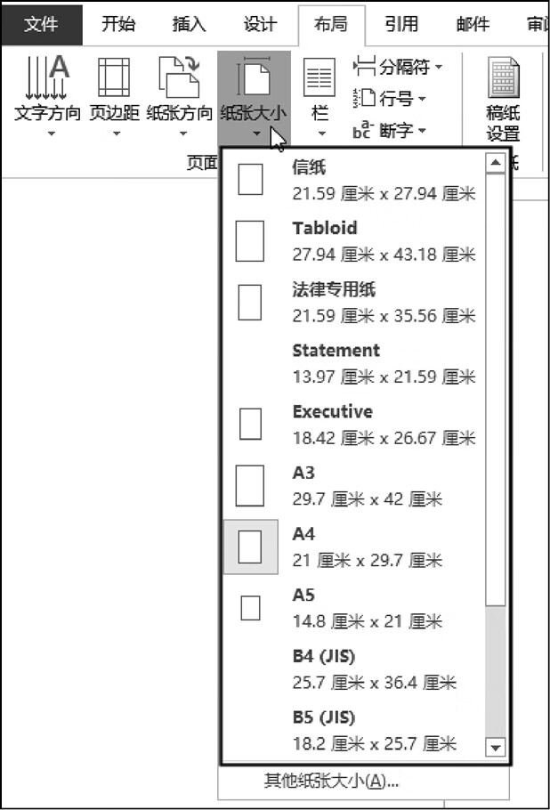
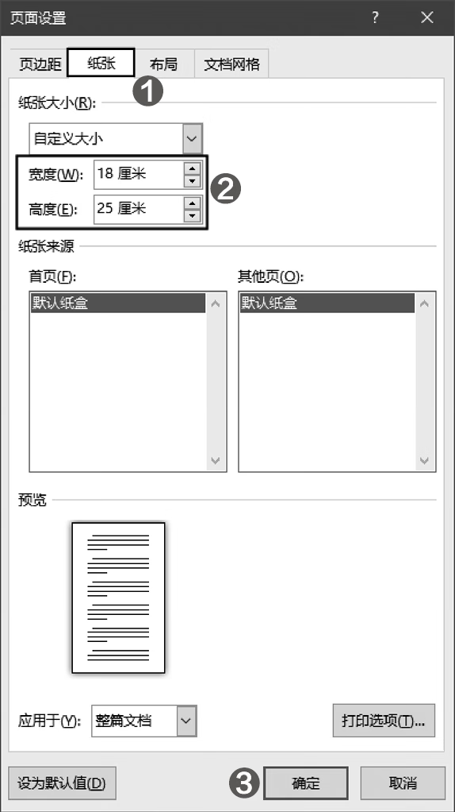

首页 > 编程笔记
Word设置纸张大小（页面大小）
在对页面进行详细设置之前，需要确定页面大小，即纸张大小。在开始设置纸张大小之前，应该了解“开本”和“印张”两个概念。
可以使用 2 的 n 次方计算开本的大小，n 表示对折的次数。
例如，印刷一本 16 开的书共使用了 20 个印张，这本书的总页数就是 16×20=320（页）。
反之，也可以根据一本书的总页数和开本大小来计算所需的印张数。例如，一本 32 开、600 页的书所需的印张数，可以使用下面的公式计算得到：600÷32=18.75。
国内生产的纸张的常见尺寸如表1所示。
此外，还有一些特殊规格的纸张，例如 787mm×980mm、890mm×1240mm、900mm×1280mm 等，某些规格需要由纸厂特殊生产。
如需选择 Word 预置的纸张大小，则可以在功能区的【布局】选项卡中单击【纸张大小】按钮，然后在打开的下拉列表中进行选择，例如“A4”，如图1所示。
如需自定义纸张大小，则可以在图1所示的下拉列表中选择【其他纸张大小】命令，打开【页面设置】对话框的【纸张】选项卡，在【宽度】和【高度】两个文本框中输入所需的值，然后单击【确定】按钮，如图2所示。
提示：单击功能区中的【布局 --> 页面设置】组右下角的对话框启动器，也可以打开【页面设置】对话框。
开本
开本是指以整张纸为计算单位，将一整张纸裁切和折叠出大小均等的小张纸的数量。例如，整张纸经过 1 次对折后为对开，经过 2 次对折后为 4 开，经过 3 次对折后为 8 开，经过 4 次对折后为 16 开。可以使用 2 的 n 次方计算开本的大小，n 表示对折的次数。
注意，这里使用“纸张大小”而不是“开本大小”作为标题名称，是为了与 Word 界面中的命令名称相统一。
印张
印张是指整张纸的一个印刷面。每个印刷面包含指定数量的书页，书页的数量由开本决定。例如，印刷一本 16 开的书共使用了 20 个印张，这本书的总页数就是 16×20=320（页）。
反之，也可以根据一本书的总页数和开本大小来计算所需的印张数。例如，一本 32 开、600 页的书所需的印张数，可以使用下面的公式计算得到：600÷32=18.75。
国内生产的纸张的常见尺寸如表1所示。
| 纸张尺寸 | 说明 |
|---|---|
| 787mm×1092mm | 我国当前文化用纸的主要尺寸，国内现有的造纸、印刷机械绝大部分都是生产和使用这种尺寸的纸张。 |
| 850mm×1168mm | 主要用于较大开本，如大 32 开的图书用的就是这种尺寸的纸张。 |
| 880mm×1230mm | 比其他同样开本的尺寸要大一些，这种尺寸是国际上通用的一种规格。 |
Word 设置纸张大小
Word 预置了很多规格的纸张大小，用户可以从中选择所需的纸张，也可以自定义纸张大小。如需选择 Word 预置的纸张大小，则可以在功能区的【布局】选项卡中单击【纸张大小】按钮，然后在打开的下拉列表中进行选择，例如“A4”，如图1所示。

图1：选择预置的纸张大小
图1：选择预置的纸张大小
如需自定义纸张大小，则可以在图1所示的下拉列表中选择【其他纸张大小】命令，打开【页面设置】对话框的【纸张】选项卡，在【宽度】和【高度】两个文本框中输入所需的值，然后单击【确定】按钮，如图2所示。

图2：自定义纸张大小
图2：自定义纸张大小
提示：单击功能区中的【布局 --> 页面设置】组右下角的对话框启动器，也可以打开【页面设置】对话框。
关注公众号「站长严长生」，在手机上阅读所有教程，随时随地都能学习。内含一款搜索神器，免费下载全网书籍和视频。

微信扫码关注公众号